The Speed.SP attribute configuration showing the security classification dropdown with all seven options: FreeAccess, Operate, SecuredWrite, VerifiedWrite, Tune, Configure, ViewOnly
Source: AVEVA Application Server 2023 Training Manual, Module 9 Section 2 + Lab 17
Covers attribute-level security classifications, security audit trail, and Lab 17: Implementing Object Security with hands-on testing of FreeAccess, Operate, SecuredWrite, VerifiedWrite, Configure, and ViewOnly classifications. (pages 9-39 to 9-64)
Reference: Module 9 Section 2 (pages 9-39 to 9-40)
Operators interact with automation objects through individual attributes. Each attribute in the Object Editor that can be modified at runtime can have an associated security classification that controls who may write to it and under what conditions.
On the Attributes tab, security icons must first be enabled before you can set security for an attribute or any of its features in a template. Click the Show/Hide Security icon to the right of the description field. When enabled, shield icons appear next to values for which security is configurable.
Clicking the security control (shield icon) next to an attribute allows you to select one of seven possible security states:
| Classification | Description |
|---|---|
| FreeAccess | Anyone can write to this attribute without restriction — no login or permissions required. Used for safety or time-critical tasks (e.g., halting a failing process) where a login request could cause dangerous delays. |
| Operate | Requires Operate permissions for the security group assigned to the object. Used for normal day-to-day tasks like writing to a Setpoint or Command attribute. |
| SecuredWrite | Requires the user to authenticate with username and password each time they write to the attribute, plus Operate permissions. Provides an extra confirmation step. |
| VerifiedWrite | Requires two different users to authenticate: the primary operator (with Operate permissions) and a verifier (with Can Verify Writes permission). A four-eyes principle for critical changes. |
| Tune | Requires Tune Operational permissions. Used for tuning parameters like alarm setpoints and PID sensitivity. |
| Configure | Requires Configure Operational permissions. The object must first be placed off scan before writing. Used for significant configuration changes (e.g., a PLC register defining input type). |
| ViewOnly | Read-only access — users can view but never write to this attribute at runtime, regardless of permissions. |
Reference: Module 9 Section 2 (pages 9-40)
The lock and security controls associated with option groups and features allow you to quickly set conditions for all options in the group at once.
Reference: Module 9 Section 2 (pages 9-40 to 9-42)
Application Server creates security-audit (operator change) events that are saved as historical data. These event messages are logged to the Alarms and Events subsystem when:
| Field | Description |
|---|---|
Event type | Operator change |
Timestamp | Date and time of the event (AppEngine scan time) |
Tagname | Name of the object generating the event |
Prim.attr | Reference string of the attribute being changed |
Tag description | Short description (for Secured/Verified writes: write type, user comment, reason) |
FieldAttribute description | Attribute description (if a FieldAttribute), otherwise object description |
Area | Area containing the object |
UserEngine | View engine or user engine requesting the change |
Operator1 | Full name of the primary operator (from UserProfile) |
Operator2 | Full name of the secondary operator (verifier), if applicable |
Old value | Previous value of the attribute |
New value | New value of the attribute |
You can use Microsoft SQL Server Management Studio to view security-related events. Connect to the Historian server and create a query against the Runtime database's Events table.
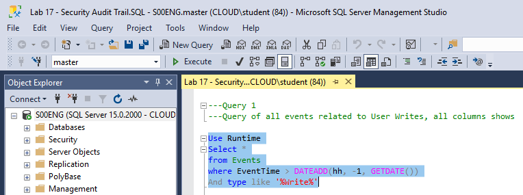
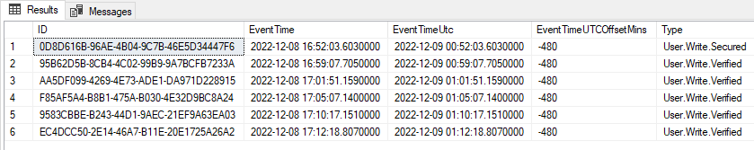
Reference: Lab 17 (pages 9-43 to 9-64)
Prerequisites: You should have completed Lab 16 (Security Roles and Permissions), with security roles configured and the production platform deployed.
In this lab, you will configure the security classifications in automation objects. The specific changes:
| Object | Attribute | Classification | Why |
|---|---|---|---|
$Mixer.Agitator | Speed.SP | SecuredWrite | Speed setpoint requires authentication each time |
$Mixer.Outlet | CMD | VerifiedWrite | Outlet valve command requires two-person verification |
Temperature_001 | PV.EngUnitsMax, PV.EngUnitsRangeMax | Configure (default) | Engineering units are significant configuration changes |
Step 1: Verify you are logged in as a member of the Application Developers 1 security role:
| Role | First, Last | User name | Password |
|---|---|---|---|
| Application Developers 1 | Thomas Miller | CLOUD\ThomasM | ww |
| Carol Morris | CLOUD\CarolM | ww |
Step 2: In the IDE, Templates tab, open the $Mixer.Agitator configuration editor from the Training\Project template toolset.
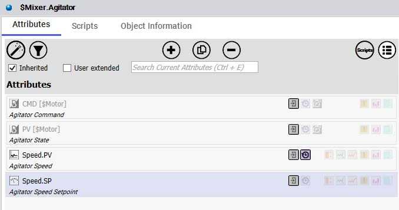
Step 3: Select the Speed.SP attribute in the Attributes list.
Step 4: Click the shield icon next to the Initial value field, and change the security classification to SecuredWrite.
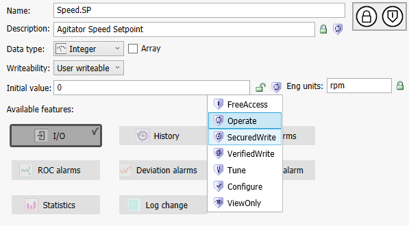
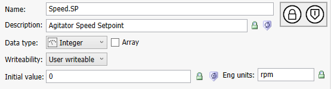
Step 5: Click the lock icon to propagate the security classification to the derived instances.
Step 6: Save and close the configuration editor.
Step 7: In the Check-in dialog box, check "Don't warn about check-in operations blocking other users in the future."
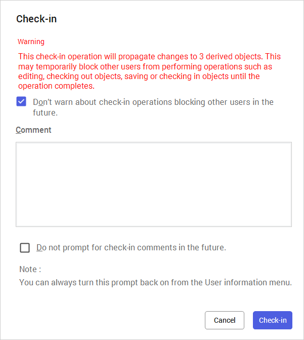
Step 8: Check in the object with an appropriate comment.
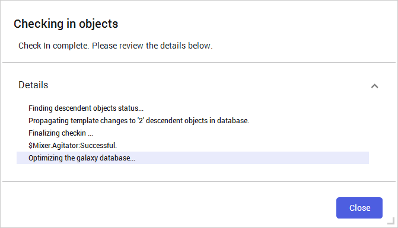
Step 9: Click Close.
Step 10: Reopen the $Mixer.Agitator configuration editor.
Step 11: Select the Speed.SP attribute.
Step 12: Unlock the Initial value property.
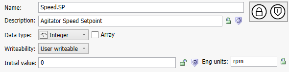
Step 13: Save, close, and check in with an appropriate comment.
Step 14: Open the $Mixer.Outlet configuration editor.
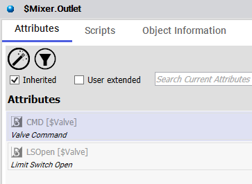
Step 15: Select the CMD attribute.
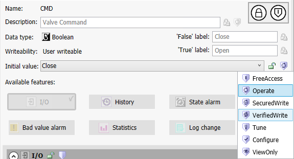
Step 16: Click the shield icon and change the security classification to VerifiedWrite.
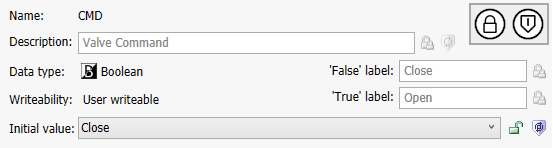
Step 17: Lock the Initial value property to propagate to derived instances.
Step 18: Save, close, and check in with an appropriate comment.
Step 19: Reopen the $Mixer.Outlet editor.
Step 20: Select the CMD attribute.
Step 21: Unlock the Initial value property.
Step 22: Save, close, and check in with an appropriate comment.
Step 23: If Object Viewer is open, close it.
Step 24: In Deployment view, expand all objects.
Step 25: Right-click TrainingGalaxy and select Deploy.
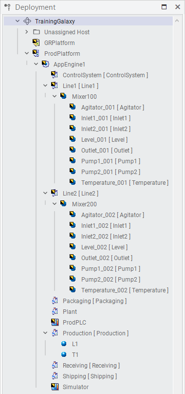
Step 26: Leave the default options and click Deploy. Wait for the deployment to complete.
Step 27: Click Close when deployment finishes.
Step 28: In Deployment view, select Outlet_001 and view it in Object Viewer.
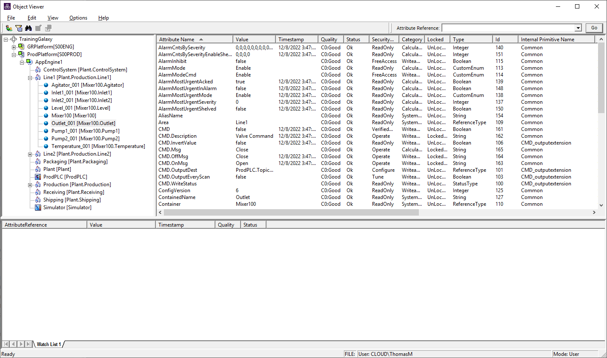
Step 29: In Object Viewer, on the Options menu, select Change User.
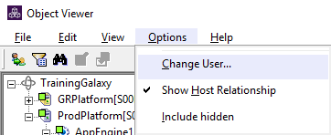
Step 30: Log in as a member of Plant Operators 1:
| Role | First, Last | User name | Password |
|---|---|---|---|
| Plant Operators 1 | John Johnson | CLOUD\JohnJ | ww |
| Lisa Young | CLOUD\LisaY | ww |
Step 31: Load the saved watch list and switch to the Mixer200 watch window.
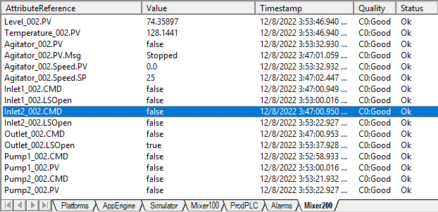
Step 32: Double-click Inlet2_002.CMD. Set it to True and click OK.
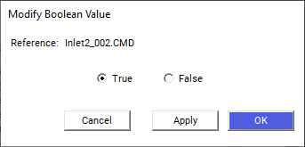
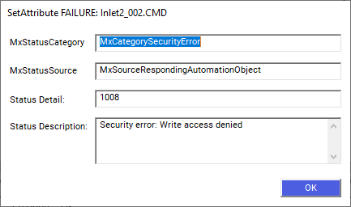
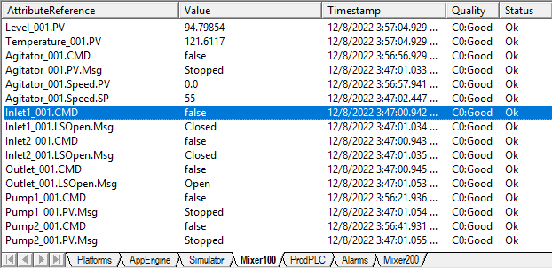
Step 36: In the Mixer100 watch window, double-click Inlet1_001.CMD. Set it to True and click OK.
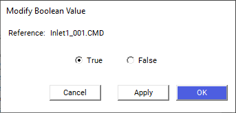
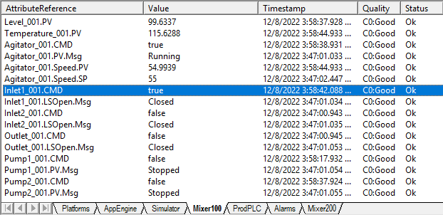
Step 39: Use Change User to log in as a member of Plant Maintenance 1:
| Role | First, Last | User name | Password |
|---|---|---|---|
| Plant Maintenance 1 | Kevin Green | CLOUD\KevinG | ww |
| Monica Reed | CLOUD\MonicaR | ww |
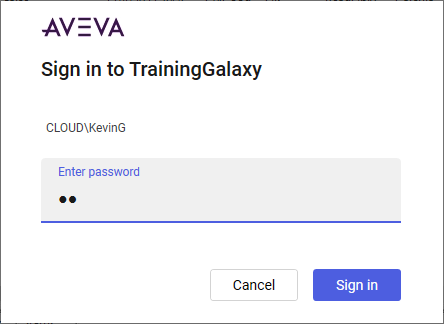
Step 40: Add the following attributes to the Mixer100 watch window:
Temperature_001.ScanStateTemperature_001.ScanStateCmdTemperature_001.PV.EngUnitsMaxTemperature_001.PV.EngUnitsRangeMax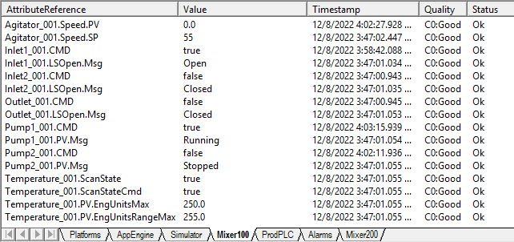
Step 42: Double-click Temperature_001.PV.EngUnitsRangeMax and change the value to 505.0. Click OK.
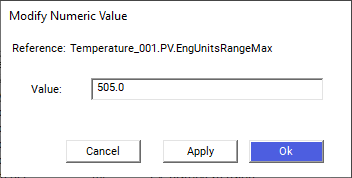
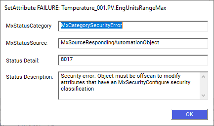
Step 45: Double-click Temperature_001.ScanStateCmd and change the value to False. Click OK.
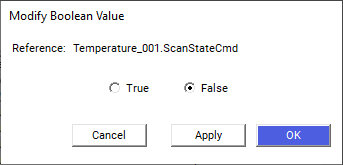
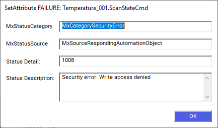
Step 48: Log in as Plant Operators 1 (CLOUD\JohnJ).
Step 49: Set Temperature_001.ScanStateCmd to False. This time the change takes effect — the ScanState now displays false.
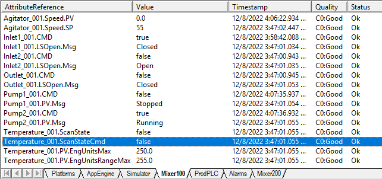
Step 50: Log in as Plant Maintenance 1 (CLOUD\KevinG).
Step 51: Set Temperature_001.PV.EngUnitsRangeMax to 505.0. Now that the object is off scan, the value writes successfully because maintenance personnel have Configure permissions.
Step 52: Set Temperature_001.PV.EngUnitsMax to 500.0.
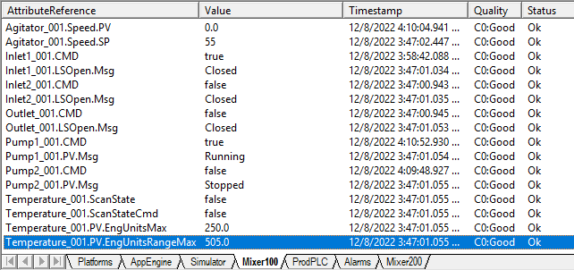
Step 53: Log in as Plant Operators 1 (CLOUD\JohnJ). Set Temperature_001.ScanStateCmd to True to place the object back on scan.
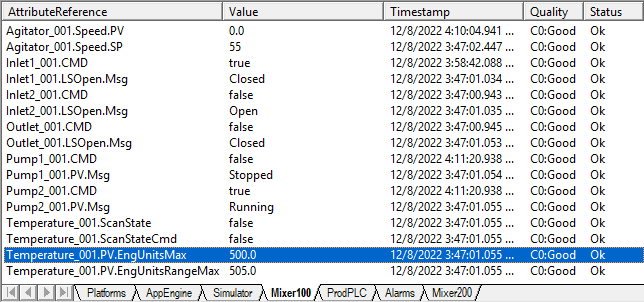
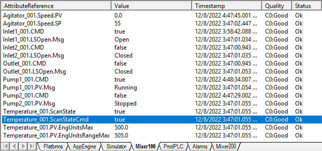
Step 55: Double-click Agitator_001.Speed.SP and change the value to 25. Click OK.
Step 57: Enter the password. Click OK. The value is written to the attribute.
Step 59: Double-click Outlet_001.CMD, set it to True, and click OK.
Step 60: The VerifiedWrite prompt appears asking for both your password and a different user with Can Verify Writes permissions. First, attempt with a user who does not have Can Verify Writes permissions (another Plant Operators 1 member).
Step 63: Double-click Outlet_001.CMD, set it to True, and click OK again.
Step 64: Enter your password, and this time use a member of Plant Supervisors 1 as the verifier:
| Role | First, Last | User name | Password |
|---|---|---|---|
| Plant Supervisors 1 | Michael Jones | CLOUD\MichaelJ | ww |
| Karen Turner | CLOUD\KarenT | ww |
Step 65: Click OK. The verifier has Can Verify Writes permissions, so the value is written successfully.
Step 68: Open Microsoft SQL Server Management Studio.
Step 69: Verify the Server name matches the Historian computer and click Connect.
Step 70: On the File menu, click Open → File.
Step 71: Navigate to C:\Training and select Lab 17 - Security Audit Trail.SQL.
Step 72: Click Open.
Step 73: Highlight the first query and click Execute.
The first query returns the complete, unformatted history of all Write events in the last hour.
Step 75: Highlight the second query and click Execute.
The second query returns formatted and sorted results showing relevant information related to Write events in the last hour — including the comment field showing write attempts from Secured and Verified writes performed during the lab.
Step 76: Close Microsoft SQL Server Management Studio.
| Classification | Authentication Required | Permissions Needed | Off-Scan Required | Typical Use |
|---|---|---|---|---|
| FreeAccess | None | None | No | Emergency stop, safety-critical controls |
| Operate | Session login | Operate | No | Normal day-to-day operations |
| SecuredWrite | Per-write login | Operate | No | Important changes needing audit trail |
| VerifiedWrite | Two users, per-write | Operate + Can Verify Writes | No | Critical changes requiring two-person approval |
| Tune | Session login | Tune | No | Alarm setpoints, PID tuning |
| Configure | Session login | Configure | Yes | Significant configuration changes |
| ViewOnly | None | None | N/A | Read-only attributes, never written at runtime |
Operate requires the user to have logged in with Operate permissions — the session login is sufficient for multiple writes. SecuredWrite requires the user to re-authenticate with their username and password each time they write to the attribute, plus Operate permissions. This creates a more detailed audit trail for each individual change.
Configure classification is used for significant configuration changes (like changing a PLC register that defines input type). Requiring the object to be off scan prevents these changes from being made while the system is actively using the object, which could cause process instability or unsafe conditions. It enforces a deliberate two-step workflow: operator places off scan → maintainer configures → operator places back on scan.
The write will fail with an access denied error. The VerifiedWrite classification enforces the four-eyes principle — two different users must authenticate. The primary operator must have Operate permissions, and the verifier must be a different user with Can Verify Writes permissions for the object.
The seven classifications are: FreeAccess (no restrictions), Operate (session login + Operate permissions), SecuredWrite (per-write authentication), VerifiedWrite (two-person verification), Tune (Tune permissions), Configure (Configure permissions + off scan), and ViewOnly (read-only, never written at runtime).
A security-audit event message contains: Event type (operator change), Timestamp, Tagname, Primary attribute reference, Tag description (including write type, comment, and reason for Secured/Verified writes), FieldAttribute description, Area, UserEngine, Operator1 (primary), Operator2 (verifier, if any), Old value, and New value.
USE Runtime
SELECT EventTime, Type, Tagname, Prim_attr AS Attribute,
Comment, Operator1, Operator2, OldValue, NewValue
FROM Events
WHERE EventTime > DATEADD(hh, -24, GETDATE())
AND Type = 'User.Write.Secured'
ORDER BY EventTime DESCThis query filters the Events table for only User.Write.Secured type events from the last 24 hours, showing the operator names, old and new values, and any comments entered during the secured write. It uses DATEADD(hh, -24, GETDATE()) for the 24-hour time window.
Source: AVEVA Application Server 2023 Training Manual, Module 9 Section 2 + Lab 17